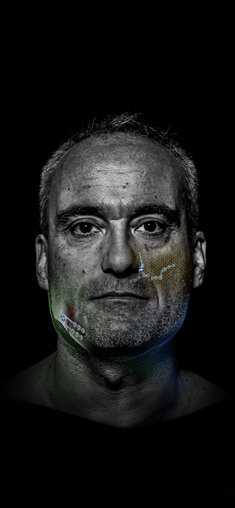
Ortognática
Placas L y Z diseñadas a partir de datos de TC clínica. Menos moldeado en la mesa, más previsibilidad.
Historia de las placas L y Z
El diseño de las placas L y Z se desarrolló con base en datos de TC clínica.
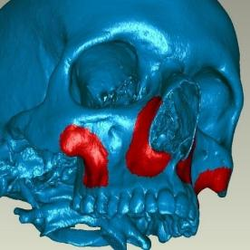
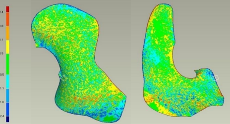
El diseño anatómico reduce el moldeado intraoperatorio
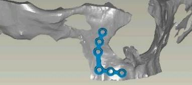
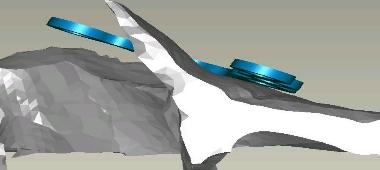
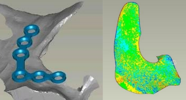
La geometría sigue la anatomía de la región de osteotomía — la placa llega al campo prácticamente lista.
Estudio de elementos finitos
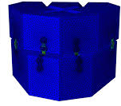
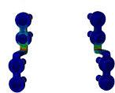
Orificios reforzados junto a la osteotomía
El material adicional alrededor de los orificios cercanos a la barra mejora la estabilidad de la placa.
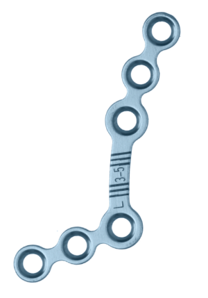
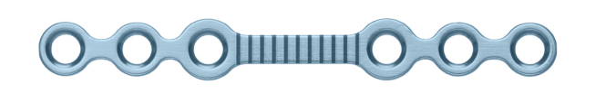
Visión general del sistema
Placas estándar de 0,7 mm para el tercio medio facial.
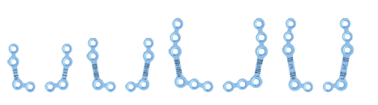
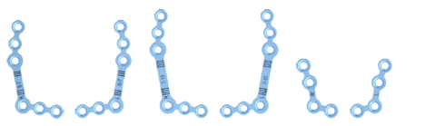
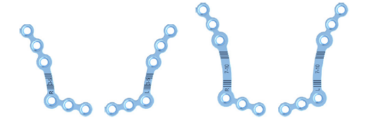
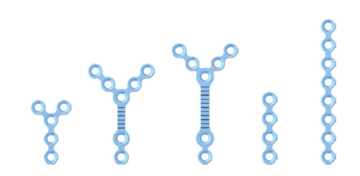
Placas L y Z: características y beneficios
*En comparación con orificios de tornillo no reforzados.
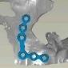
Placas prefabricadas de 0,7 mm
Tercio medio facial — geometrías L y Z en incrementos pequeños.
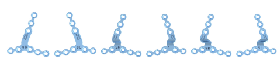
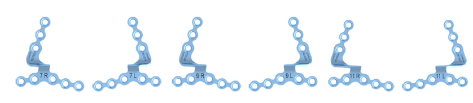
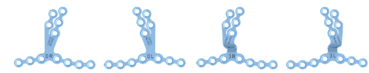
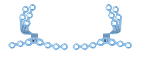
Placas de osteotomía sagital
Cuatro espesores, de 0,7 a 1,0 mm.
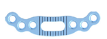
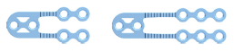
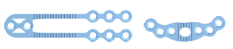
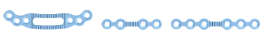
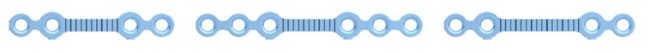